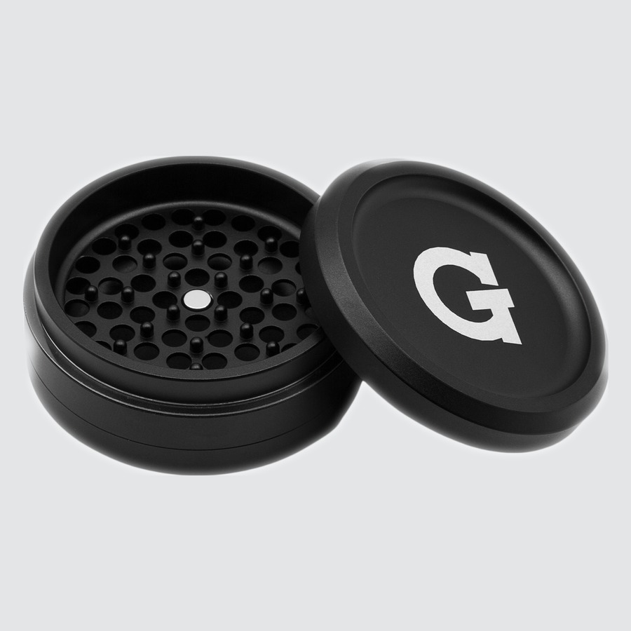
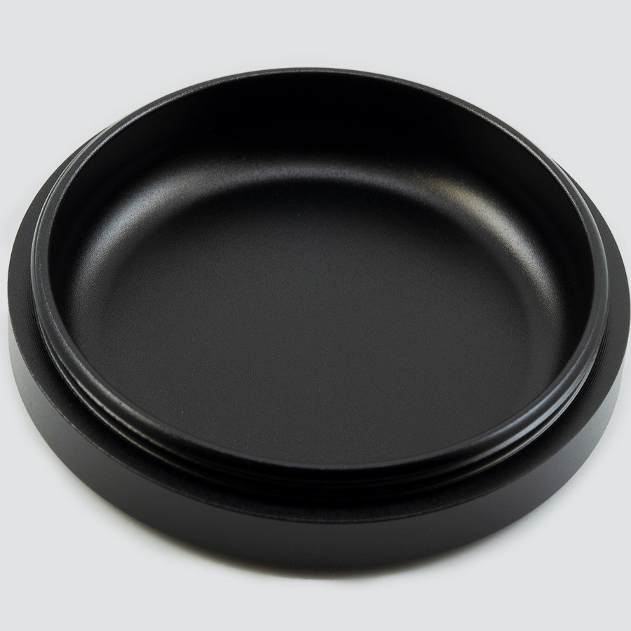
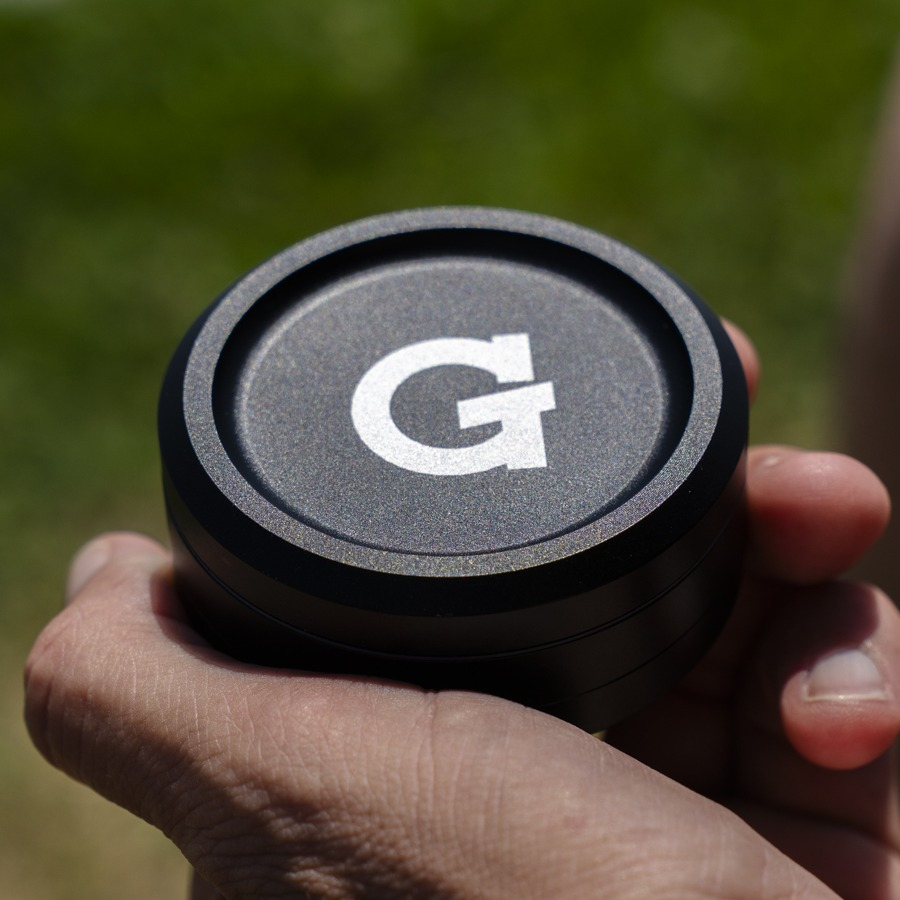

Using your
G Pen 3-Piece Slim Grinder
How to use
-

1Open & Load
- Remove the magnetic lid.
- Break up large buds by hand and place them on the teeth in the grinding chamber.
- Don't overfill. Leave room for the lid to turn freely.
-
 2
2Grind
- Replace the lid and twist back and forth about 10 times.
- Tap the grinder a few times so ground material falls through to the collection chamber.
The micro-rounded teeth gently separate flower instead of shredding it, helping preserve terpenes and trichomes.
-

3Collect
- Unscrew the bottom chamber to reach your ground material.
- No kief screen: trichomes and kief stay mixed in with your flower.
- Load it straight into your Dash II or Dash+.
-

4Clean
- Brush leftover material out of the teeth and chambers.
- For a deeper clean, soak the pieces in isopropyl alcohol (ISO), then rinse with water.
- Let every piece dry completely before reassembling and using it again.
Upgrades
Built to pair with the Dash II and Dash+.


Specs
View Product Details
| Type | 3‑Piece Dry Herb Grinder |
|---|---|
| Teeth | Patented micro-rounded teeth |
| Material | 6063 aircraft-grade anodized aluminum |
| Kief screen | None, screenless design |
| Lid | Magnetic |
| Size | 64 mm diameter |
| Pairs with | G Pen Dash II, Dash+ |
| Dimensions | 65 × 65 × 31 mm |
| Weight | 110 g |
| Patent | No. 11,690,480 |
| SKU | GPA-001‑APSC |
| UPC | 811736020688 |
Help
Common questions
Why doesn't it have a kief screen?
The screenless 3‑piece design keeps trichomes and kief mixed in with your ground flower instead of separating them out, so you get all of your flower in every session.
What makes micro-rounded teeth different?
Instead of cutting and shredding like sharp teeth, the rounded teeth gently separate flower into a consistent grind. In independent testing by Orange Photonics, the micro-rounded design showed the highest post-grind THC retention of the grinder styles tested.
The lid is hard to turn
The chamber is probably overfilled. Remove some flower, break up large buds by hand, and try again. If it still sticks, brush out any buildup around the teeth and threads.
What grind works best in my Dash II or Dash+?
An even, consistent grind. About 10 twists and a few taps give you material that loads and heats evenly in the Dash II and Dash+.